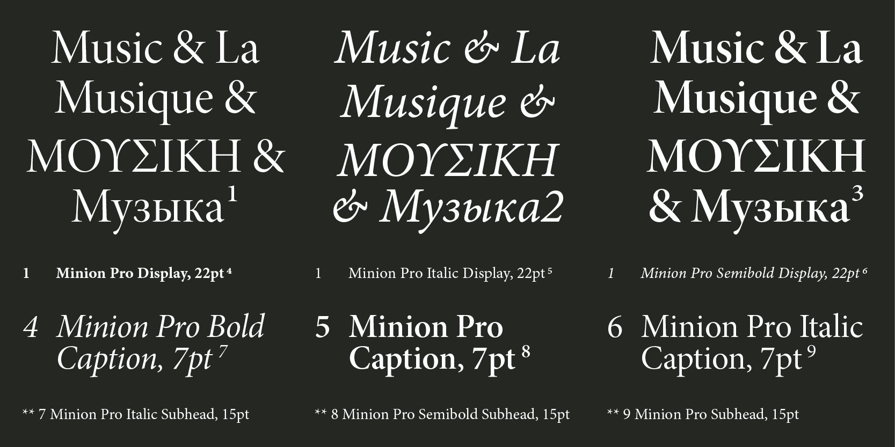

Minion Pro è un carattere tipografico Adobe Original progettato da Robert Slimbach. La prima versione di Minion è stata rilasciata nel 1990. Le aggiunte in cirillico sono state rilasciate nel 1992 e infine la versione OpenType Pro è stata rilasciata nel 2000.
Minion Pro è ispirato ai caratteri tipografici classici e vecchio stile del tardo Rinascimento, un periodo di font eleganti, belli e ad alta leggibilità. Minion Pro combina le qualità estetiche e funzionali che rendono il carattere di testo altamente leggibile con la versatilità della tecnologia digitale OpenType, offrendo flessibilità e controllo tipografico senza precedenti, sia per testo lungo che per usi espositivi.

L’intera famiglia Minion Pro contiene tre spessori e due larghezze, ciascuna con varianti di dimensioni ottiche e con il supporto di una gamma completa di lingue occidentali, tra cui greco e cirillico. Con le sue numerose legature, maiuscolo, cifre vecchio stile, swash e altri glifi aggiunti, Minion Pro è ideale per usi che vanno dai libri in edizione limitata alle newsletter al packaging.